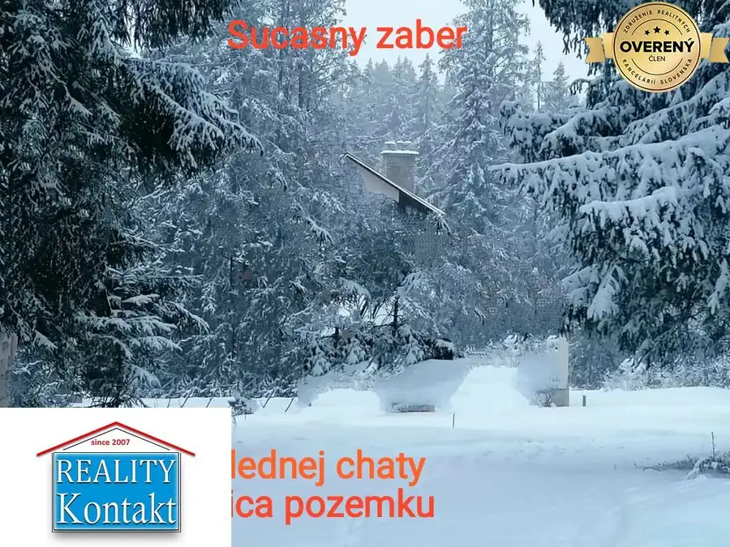
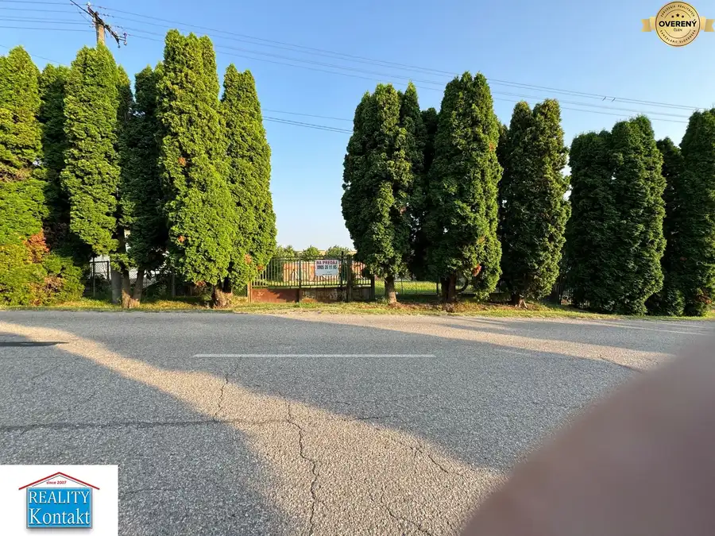
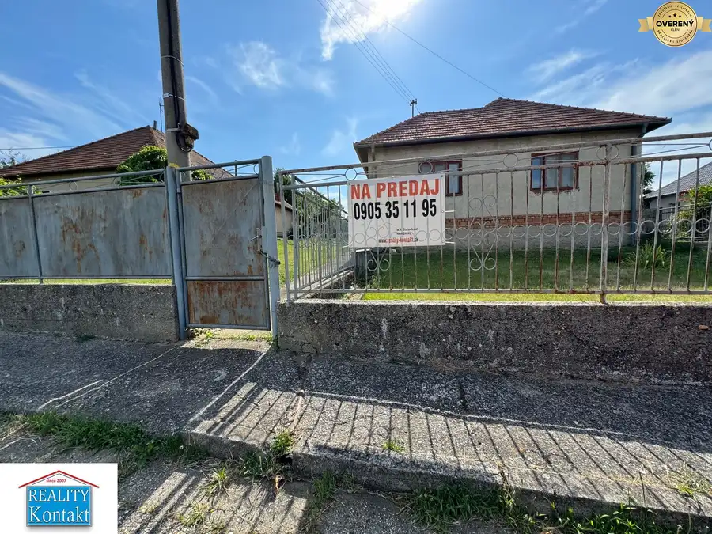
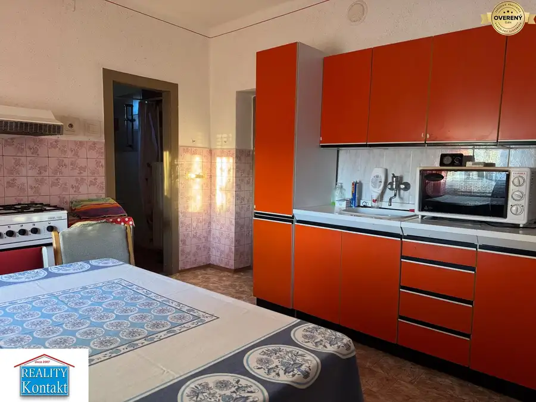
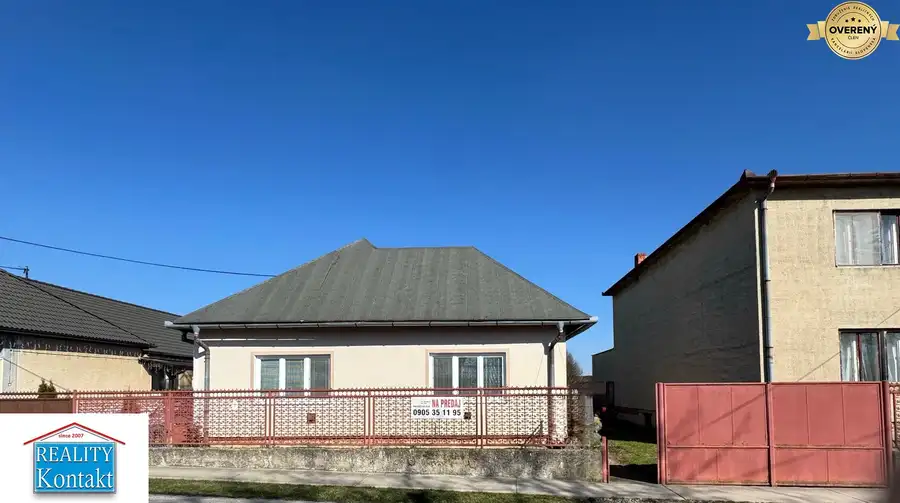
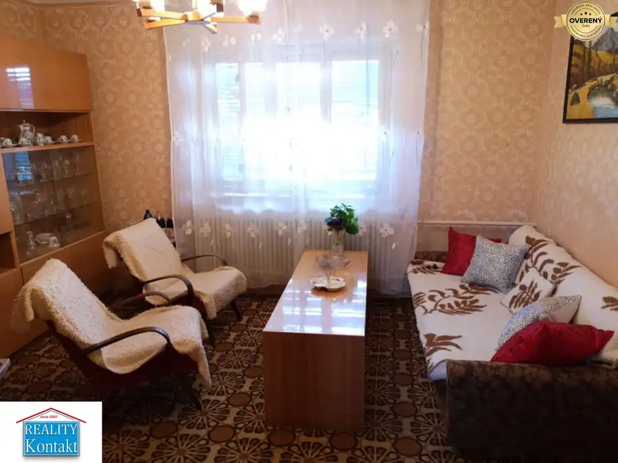
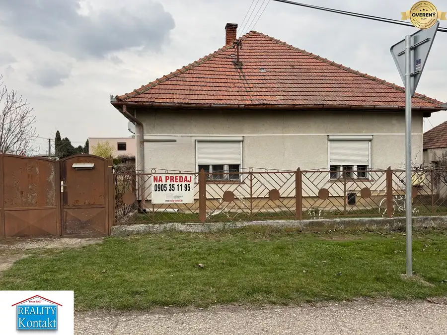

Aktuálna ponuka
Nehnuteľnosti, ktoré ponúkam
7 nehnuteľností na predaj a prenájom. Vyberte typ, alebo napíšte lokalitu.
7 z 7 ponúk

Pozemok8 752 400 €Ponúkame na predaj investičný pozemok mimo TANAPu - Vysoké Tatry Štrba 20900 m² Hľadáte pozemky v Vysokych Tatrach? PONUKA pre Realitky a developerov. SUPER PONUKA -INVESTICNY pozemok 20.900 m2, ktorý sa nachádza v tesnej…
Rodinné domy3 87 900 €Na predaj rozostavaný dom v obci RADAVA s veľkým pozemkom 1979 m2 Radava 5-izbový216 m² Predáme rozostavaný rodinný dom v obci Radava. Postavená je pivničná čas s keramickým stropom. Stavba je tehlová, začala sa stavat na základe…
Rodinné domy10 89 000 €Predáme 3 izb. dom s veľkým pozemkom- Radava Radava 3-izbový100 m² Predáme zachovalý 3 izbový rodinný dom v obci Radava. Nachádza sa v tichej ulici na krásnom širokom, 4200m2. veľkom pozemku. Parcela zastavané plochy…
Rodinné domy10 89 000 €Predáme 3-izb. rodinný dom- Veľké Lovce Veľké Lovce 3-izbový100 m² Predáme zachovalý 3 -izbový rodinný dom v obci Leľké Lovce, okres Nové Zámky. Dom je postavený z pálenej tehly na mierne svahovitom, 821 m2. veľkom…
Rodinné domy10 90 000 €Predáme 4-izb. rodinný dom v obci Pozba Pozba 4-izbový140 m² Predáme zachovalý 4 - izbový rodinný dom v obci Pozba, okres Nové Zámky. Obec je vzdialená iba 5 km. od obce Podhájska, kde sa nachádza známe,…
Rodinné domy10 70 000 €Predáme 5 -izbový rodinný dom - Trávnica Trávnica 5-izbový145 m² Predáme 5 -izbový rodinný dom v obci Trávnica. Nachádza sa na Hlavnej ulici. Jedná sa o dom v tvare štvorca, vo dvore do “L” so škridlovou, valbovou…
Rodinné domyRezervované10 69 900 €Predáme 5- izb. rodinný dom -Mojzesovo Mojzesovo 5-izbový130 m² Predáme 5 izbový rodinný dom v obci Mojzesovo. Dom bol postavený na rovnom 730m2. veľkom pozemku, v bočnej ulici. Blízko domu je autobusová zástavka.…Tomuto výberu zatiaľ nezodpovedá žiadna ponuka. Napíšte mi, čo hľadáte.